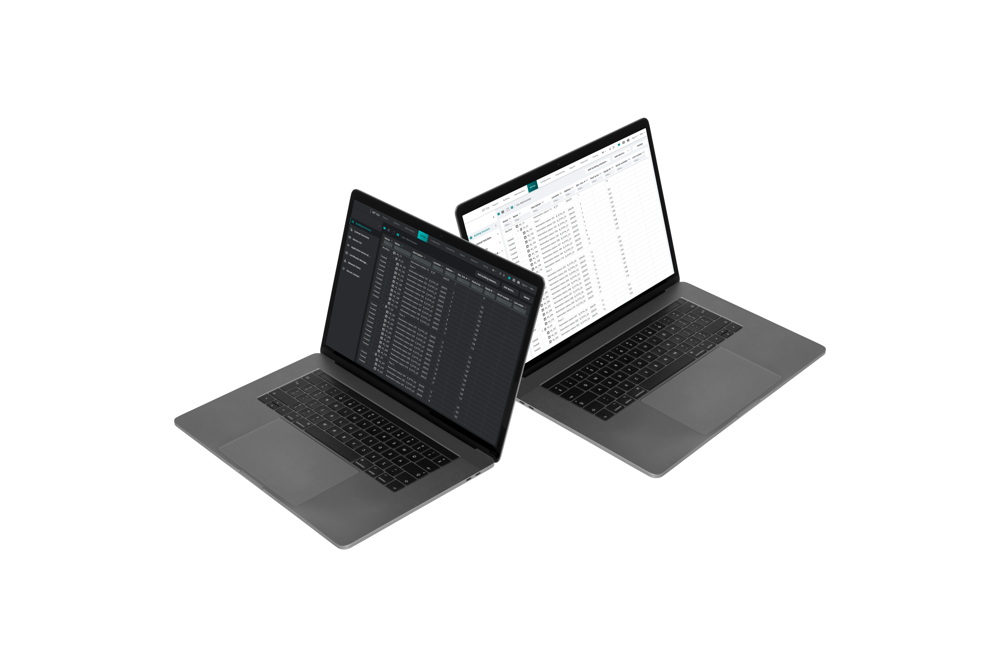
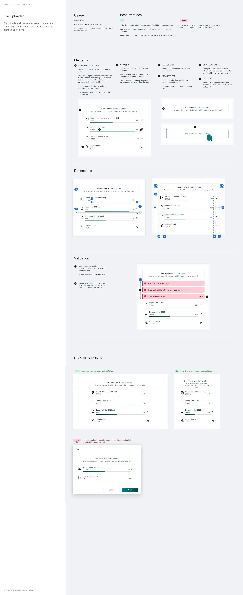
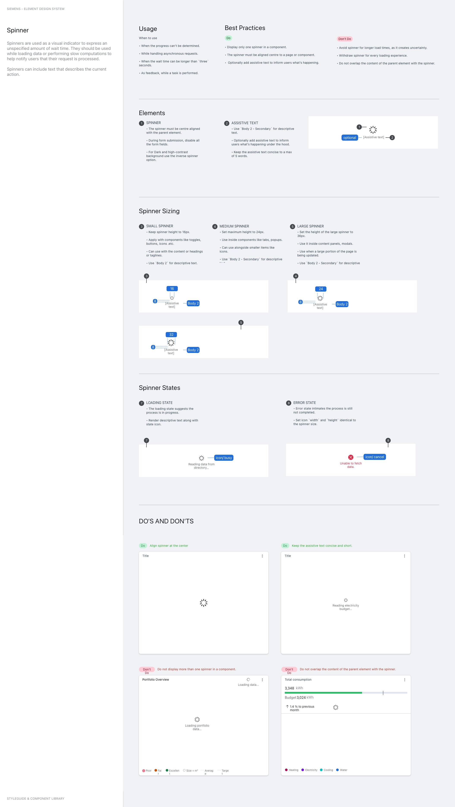

Fig. 01 · Light and dark theme implementations across Element components.
Context
Siemens' wide product portfolio across industrial software, smart infrastructure, and building automation had grown with each product team designing its own components, resulting in noticeably inconsistent user experiences even within the same customer account. Element was created as a cross-portfolio design system to harmonize that fragmentation, providing shared components, tokens, and behavior patterns that dozens of SI BP teams could rely on instead of reinventing the basics.
Goal
- Create and implement the 'Element' Design System to harmonize the UX across all Siemens SI BP products.
My role
- Designed the "progress indications," "Spinner," and "File-Uploader" components.
- Led the migration of legacy platforms to the new design system.
- Collaborated closely with a team of developers to brainstorm and review ideas.
Key decisions
Progress as a behavior system, not a single component
Progress in Siemens products needed to cover many situations: determinate versus indeterminate loading, staged flows, blocking operations, and background processing. Instead of defining a single "progress bar" component, I designed progress as a related family of patterns - Spinner for indeterminate waits, Skeleton Screens for structured page loads, and the determinate Progress Bar inside the File Uploader - with a shared visual language, so teams could pick the appropriate variant for their context without inventing new, one-off solutions.
File uploader with failure as a first-class state
Most file uploaders showcase the happy path and bolt failure on as an afterthought. I deliberately designed the uploader around failure modes - network interruptions, file-size limits, format mismatches, partial uploads - so that every product using the component handled these situations consistently. That meant modeling error states, recovery paths, and inline feedback as core to the component, not edge cases.

Fig. 02 · File uploader with upload, progress, success, and error states.

Fig. 03 · Spinner component for indeterminate loading states.
Impact
- Contributed to a unified design strategy that harmonized the user experience across a wide range of products.
Takeaway
What I took forward
Working on a design system reinforced that you are designing interfaces other designers will reinterpret and extend; only components with clear, defensible opinions tend to survive and be adopted widely.
Tools & methods
Sketch
Design Thinking
SMEs Collaboration
Requirements
Design System Audit
Component Research
Competitive Analysis
Document States and Behaviour
Usage and Patterns